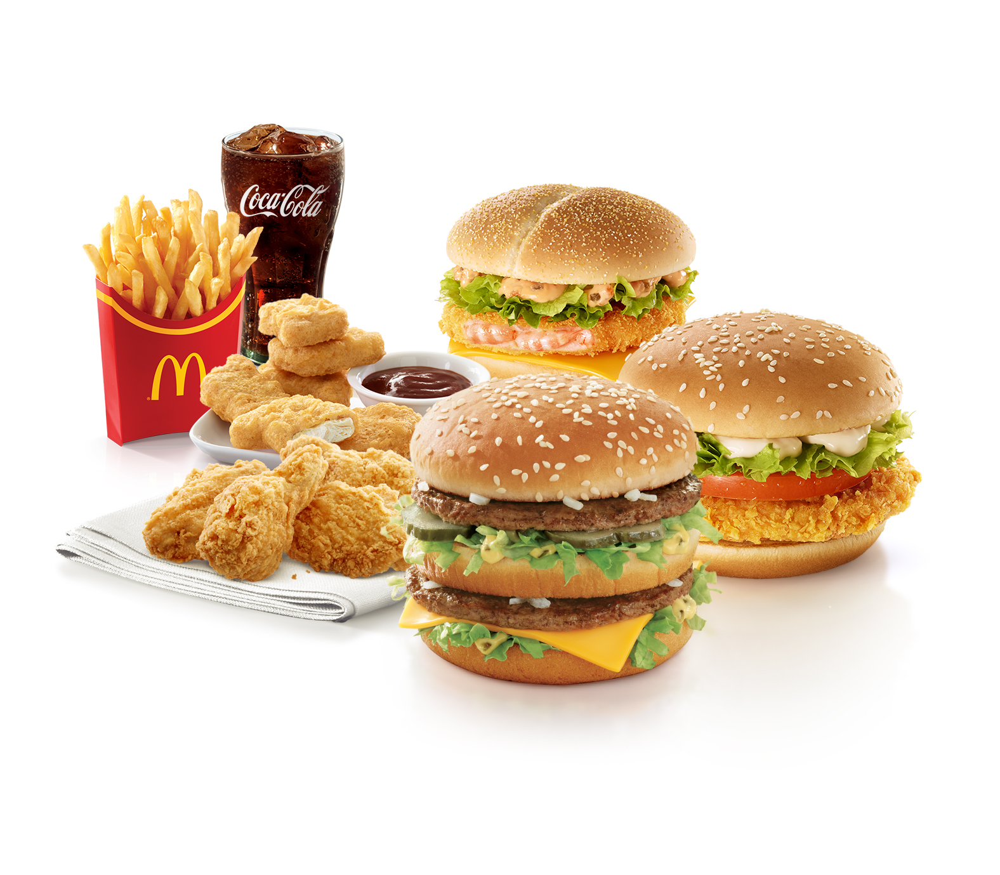

홈 > 브랜드 매거진 > 맥도날드
맥도날드
맥도날드는 가장 평범한 소비재를 세계 어디서나 읽히는 대중문화의 기호로 바꾼 브랜드다. 햄버거와 감자튀김은 단순한 메뉴지만, 맥도날드는 속도, 표준화, 접근성, 익숙함을 결합해 글로벌 일상의 상징을 만들었다. Kantar BrandZ 2026 Top 100에서 McDonald's는 10위, 브랜드 가치는 US$235,095M, 전년 대비 변화율은 6%로 공표되었습니다.
산업 분야 식음료 · 공개 등급 매거진 완성 · 브랜드 평가 5 ★

한눈에 보는 브랜드
맥도날드는 1940년 미국 캘리포니아 샌버나디노에서 모리스와 리처드 맥도날드 형제가 연 드라이브인 식당에서 출발했다. 1948년 형제는 가게를 햄버거 중심의 효율 매장으로 개조하며 조립라인식 스피디 서비스 시스템을 도입했고, 1955년 사업가 레이 크록이 일리노이주 디플레인스에 프랜차이즈 1호점을 열며 전환점을 맞았다.
크록은 1961년 약 270만 달러에 형제 지분을 인수해 회사를 글로벌 기업으로 키웠다. 2024년 말 기준 전 세계 약 4만 3477개 매장이 약 114개국에서 운영되는 세계 최대 패스트푸드 체인이다.
브랜드 관점
맥도날드의 핵심 경쟁력은 단순한 햄버거 판매가 아니라 프랜차이즈와 부동산을 결합한 사업 구조에 있다. 본사가 매장 부지를 확보해 가맹점주에게 임대하고 매출 로열티와 임대료를 함께 받는 모델로, 버거킹이나 KFC 같은 경쟁사보다 안정적인 현금 흐름을 만든다.
1948년 형제가 고안하고 크록이 표준화한 스피디 서비스 시스템 덕에 빠른 속도와 균일한 맛이라는 차별점을 확보했다. 최근에는 디지털 전환이 두드러져 2023년 글로벌 매출의 약 35%가 모바일 앱과 키오스크 등 디지털 채널에서 나왔고, 맥카페로 커피 시장을 공략하며 가성비 메뉴로 인플레이션 시기 고객을 붙잡으려는 가격 전략을 강화하고 있다.
한국에서는 1988년 3월 29일 서울 압구정동 로데오거리에 약 100평 규모 1호점이 문을 열어 평일 8천에서 9천 명이 몰릴 만큼 화제가 됐고, 외식 문화 변화의 상징이 됐다.
시작과 성장
창립은 1940년 맥도날드 형제의 샌버나디노 드라이브인에서 시작됐다. 형제는 1948년 메뉴를 햄버거, 감자튀김, 음료 중심으로 줄이고 주방을 표준화한 스피디 서비스 시스템을 도입해 적은 인력으로 많은 양을 싼값에 공급했다.
이 효율성에 주목한 멀티믹서 판매원 레이 크록이 1954년 매장을 방문한 뒤 프랜차이즈 권리를 따냈고, 1955년 4월 일리노이주 디플레인스에 자신의 1호점을 열며 첫 번째 전환점을 만들었다. 두 번째 전환점은 1961년으로, 크록은 형제에게 약 270만 달러를 주고 회사를 완전히 인수했다.
이후 표준 운영 매뉴얼과 햄버거 대학 교육 체계를 앞세워 공격적으로 확장했고, 미국을 넘어 캐나다와 일본 등으로 진출하며 국제 체인으로 성장했다. 일본 1호점은 1971년 도쿄 긴자에, 한국 1호점은 1988년 서울 압구정동에 들어섰다.
브랜드 아이덴티티
맥도날드는 빠름, 일관성, 가족 친화라는 가치를 중심에 둔다. 시각 정체성의 핵심은 알파벳 M 형태의 골든 아치로, 1961년 디자이너 짐 신들러가 초기 매장 건축의 아치를 로고로 다듬었고 2003년에는 빨간 배경 위에 노란 아치를 올린 형태로 정리됐다.
빨강은 식욕과 주의를 자극하고 노랑은 따뜻함과 친근함을 주는 색으로 선택됐다. 타깃은 어린이와 가족을 포함한 폭넓은 대중이며, 해피밀과 장난감 구성으로 어린 고객층을 오래 공략해 왔다.
브랜드 보이스는 2003년 9월 도입돼 가장 오래 쓰인 글로벌 슬로건 '아임 러빙 잇(I'm lovin' it)'과 다섯 음의 시그니처 사운드로 대표된다.
제품과 서비스
주요 제품군은 햄버거, 치킨, 아침 메뉴, 디저트, 커피로 나뉜다. 대표 시그니처는 두 장의 패티를 쓴 빅맥과 치킨 맥너겟이며, 쿼터파운더, 맥치킨, 필레오피쉬, 에그 맥머핀, 해시브라운, 맥카페 음료도 폭넓게 팔린다.
미국에서 빅맥 단품은 약 8달러대, 6조각 맥너겟은 약 4달러대에 형성돼 있다. 한국 1호점 개점 당시인 1988년에는 햄버거가 900원, 빅맥이 2400원, 감자튀김이 550원에서 700원 수준이었다.
유통은 직영 및 가맹 매장, 드라이브스루, 모바일 앱 주문과 배달 채널을 통해 이뤄진다.
현재 상태
본사는 미국 일리노이주 시카고 웨스트루프에 있으며 약 2천 명이 근무한다. 직접 고용 인원은 약 15만 명 수준이고, 가맹점을 포함한 전체 시스템 종사자는 이를 크게 웃돈다.
매장 수는 2024년 말 기준 전 세계 약 4만 3477개이며 약 114개국에 진출해 있다. 최대 시장은 미국으로 약 1만 3천여 개 매장을 두고 있고 일본과 중국이 뒤를 잇는다.
2024년 연결 매출은 약 259억 달러 수준이다. 최고경영자는 크리스 켐프친스키다.
타임라인
BI/CI 변천사
함께 읽을 브랜드
버거킹는 미국의 식음료 브랜드로, 맛, 메뉴 구성, 패키지, 매장 또는 유통 채널이 함께 브랜드 경험을 만드는 영역입니다.
KFC(Kentucky Fried Chicken)는 할랜드 샌더스 대령이 창립한 미국 기반의 글로벌 프라이드 치킨 프랜차이즈이다.
 식음료 · 매거진 완성앱솔루트
식음료 · 매거진 완성앱솔루트앱솔루트는 보드카 병 하나를 광고와 예술의 반복 가능한 캔버스로 만든 브랜드다. 제품 형태의 일관성을 유지하면서도 캠페인마다 다른 문화적 해석을 입혀, 단순한 병을...
식음료 · 자료 기반컴포즈커피컴포즈커피(Compose Coffee)는 2014년 부산에서 시작된 한국의 저가 커피 프랜차이즈로, 2024년 필리핀 졸리비그룹이 지분을 인수했다.
식음료 · 자료 기반메가MGC커피메가MGC커피(Mega MGC Coffee)는 2015년 시작된 한국의 저가 대용량 커피 프랜차이즈다.
Ma
Magic Spoon Treats
식음료 · 편집 검수Magic Spoon Treats매직스푼은 그렉 세위츠와 가비 루이스가 2019년 미국에서 선보인 저당·고단백 시리얼 브랜드다. 어린 시절 토요일 아침 만화를 보며 먹던 알록달록한 시리얼의 즐거움을...
Ma
Matheson Food Company
식음료 · 편집 검수Matheson Food Company매티 매시슨 푸드 컴퍼니는 캐나다 셰프이자 더 베어 총괄 프로듀서인 매티 매시슨이 2024년 정식 선보인 식품 라인으로, 2023년 말 조용히 데뷔했다. 바비큐 소스...
Tu
Tugg
식음료 · 편집 검수TuggTugg는 스웨덴 예테보리를 거점으로 말뫼 등지에서 운영되는 햄버거 체인이다. 디자인 아카이브 관점에서 Tugg가 주목받는 이유는 스톡홀름·뉴욕 기반 브랜드 에이전시...